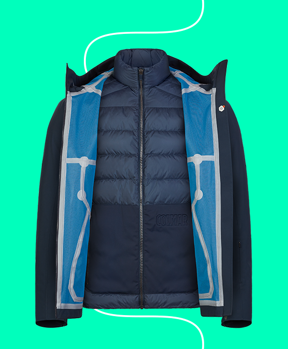
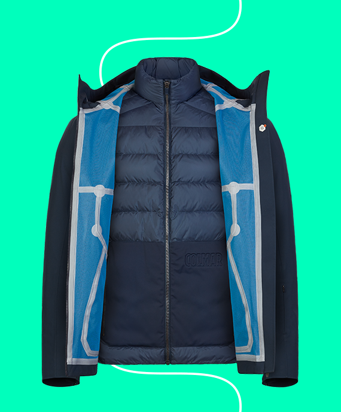

La giacca da sci uomo Bormio è un capo storico 2in1, composto da un guscio impermeabile e da un piumino interno completamente staccabile. Con la capsule Reborn, rinasce l'omonima giacca dell’85 in una veste totalmente contemporanea, arricchita dall’applicazione del Grafene G+. Questa speciale tecnologia distribuisce il calore generato dal corpo, dalle zone più calde a quelle più fredde, portando una piacevole sensazione di benessere e una migliore circolazione del sangue.
 



BORMIO
CAPSULE COLLECTION 17|18